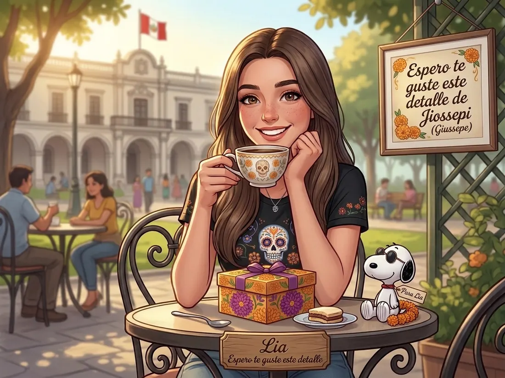

Capítulo I
Un jardín que florece de noche
Lia, entre rosas rojas y luces tímidas, el aire guarda secretos suaves que preparé solo para ti.
“Donde hay rosas, Lia, hay magia que se queda contigo.”

Un regalo para escuchar
Canciones para ti
Cinco canciones que acompañan este pequeño universo de cariño.
-
Por Ti3AMEscuchar en Spotify
-
San CiprianoLa SantaEscuchar en Spotify
-
EL CIELORels BEscuchar en Spotify
-
Eres la herida más bonitaMr. YeffEscuchar en Spotify
-
Eres mi más hermosa canciónMr. YeffEscuchar en Spotify
Cada botón abre una búsqueda del tema en Spotify.